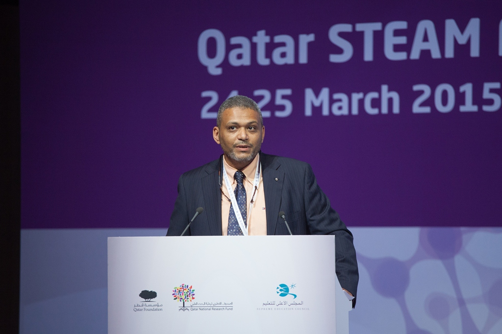

Prepared a comprehensive technical report for the science education internet portal. The portal will include different modules as Inquiry-Based science education, research methodology and projects, and basic science education.
USA Visit Date:Sep.2014
USA Visit:
Visit the center for Nanotechnology Education and Utilization (CNEU) and the National Science Foundation’s (NSF) Nanotechnology Application and Career Knowledge (NACK) Network at the Pennsylvania State University, to discuss possible collaboration with the CNEU in developing graduate educational programs for students and technical staff in Egypt and Middle East. In addition, opportunities of promoting nanotechnology education in local universities have been explored.
UNESCO / MOHE High Level Forum Date:November2014,23rd
UNESCO / MOHE High Level Forum:
NECTAR foundation represented the Egyptian specialized NGOs on Education and research field during the round table discussion about “Galvanizing Higher Education & Scientific Research towards an Innovation Economy”
UNESCO / MOHE High Level Forum Date:November2014,24th
UNESCO / MOHE High Level Forum:
NECTAR foundation represented the Egyptian specialized NGOs on Education and research field during the round table discussion about “Galvanizing Education towards a Knowledge-based Economy"
ISC Arab – Qatar Date:November2014
ISC Arab – Qatar:
Dr. Ehab Barakat (NFD FOUNDER) co-chairing the judges committee, leading and training the judges through an induction session, and nominated to winners.
Intel ISEF – Egypt Date:Feb.2015
Intel ISEF – Egypt:
NECTAR judging team assigned to manage and lead the judging committee, appraising the wining projects nominated to Intel ISEF 2015 and preparing the Intel ISEF 2015 finalist.
Intel ISEF – Upper Egypt Date:Dec.2013
Intel ISEF – Upper Egypt:
NECTAR judging team assigned to manage and lead the judging committee, appraising the wining projects nominated to Intel ISEF 2015 and preparing the Intel ISEF 2015 finalist.

Qatar STEAM Fair Date:March.2015
Qatar STEAM Fair:
Dr. Ehab Barakat (NFD FOUNDER) co-chairing the judges committee, played an important role in the scientific review committee, leading and training the judges through an induction session, appraising the wining projects nominated to Intel ISEF 2015 and preparing the Intel ISEF 2015 finalist.
Kuwait Science and Engineering Fair Date:April.2015
Kuwait Science and Engineering Fair:
NECTAR founder invited as trainer and co-chair for the judging committee.
Misr Elkhir Foundation Date:Jan.2015
Misr Elkhir Foundation:
In January of 2015 , a financing concrete agreement has been signed to donate with The electronic program of the scientific competitions judging , which was created according to the suggestion of Dr. Ihab Barakat , the founder of NECTAR foundation , and he also designed the program and supervised on its making.